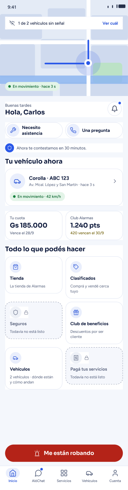
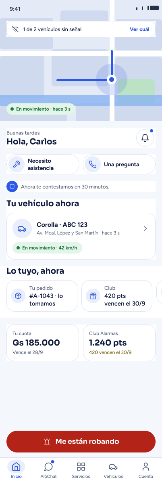
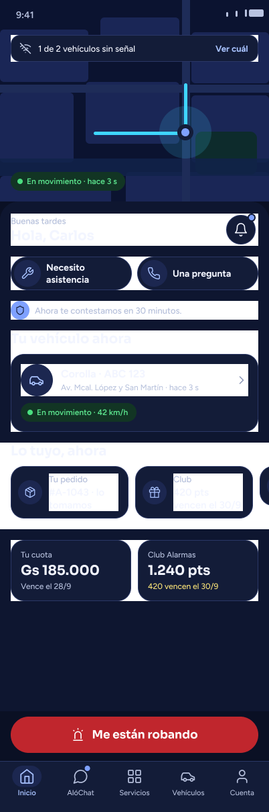

Alarmas Py · Inicio · medido el 19-sep-2026 entre las 20:27 y las 20:43 -03
Dos decisiones del Inicio
Las láminas de abajo son propuestas. Los montos, patentes y nombres son de ejemplo. Nada de esto está en la app todavía.
¿La grilla «Todo lo que podés hacer» se va o se queda?



Lo que se gana, medido
| qué | hoy | con la fusión |
|---|---|---|
| Alto del recorrido | 1.531 px | 1.209 px — 322 menos |
| Lo mismo, en pantalla chica y con letra grande | 2.825 px | 1.904 px — 921 menos |
| Destinos nombrados en el Inicio | 6 | 4 |
| De esos, cuántos el cliente no puede usar | 2 de 6 | 0 |
Lo que se pierde, dicho sin maquillar
- Cinco destinos dejan de nombrarse en el Inicio: Tienda, Clasificados, Seguros, Club de beneficios y Pagá tus servicios. Quedarían sólo en la pestaña «Servicios».
- Y ahí está el riesgo: medido en el código, la ruta de «Servicios» tiene 0 usos. Si la grilla se va antes de cablear esa pestaña, esos destinos se quedan sin puerta.
- El Club aparece dos veces en la lámina B: en la fila de arriba («420 pts vencen el 30/9») y en la tarjeta de abajo («1.240 pts · 420 vencen el 30/9»). Hay que dejar uno.
- Al entrar, la fila «Lo tuyo, ahora» queda tapada a la mitad por el botón rojo. Se lee bajando, no de entrada.
Lo que hoy es raro y nadie decidió
En la grilla de hoy, dos baldosas de seis dicen «Todavía no está listo»: Seguros y Pagá tus servicios. Un tercio de la grilla le muestra al cliente cosas que no puede tocar.
El punto de aviso de «Servicios»: ¿con el degrade de Instagram o plano?


| qué se midió | V2 · degrade | V6a · plano |
|---|---|---|
| Se ve en barra clara | 1,29 | 6,24 |
| Se ve en barra oscura | 2,62 | 7,21 |
| Píxeles rojos que mete en la barra | 36 | 0 |
| Le tapa píxeles al ícono | — | 0 |
El mínimo para que algo así se vea es 3,00. V6a es la única de diez variantes que lo pasa en los dos modos.
Y el motivo que no es de gusto
El degrade mete rojo y coral en la barra. Hoy el rojo es de una sola cosa: el botón de «Me están robando». Si el aviso de Servicios también es rojizo, la urgencia deja de ser la única cosa roja de la pantalla.
Dato del camino: Instagram tampoco lo hace. En cuatro láminas de su propia barra, su punto es rojo liso — cero puntos con degrade. El degrade de Instagram vive en el círculo grande de la foto, de 56 a 64 pt, nunca en algo de 8.
Lo que falta medir, dicho antes de que lo preguntes
- Los colores exactos del degrade de Instagram no están muestreados: para muestrearlos habría que descargar la lámina, y los términos de esa biblioteca lo prohíben. Los colores usados son los públicos de la marca.
- Estas láminas están sólo en español. Faltan inglés y portugués, que es donde las palabras se parten.
- El arreglo para la pantalla más chica con letra grande está dibujado pero no aplicado en ninguna lámina de esta página.
Página sin indexar, hecha para revisar. Alarmas Py · 19-sep-2026.